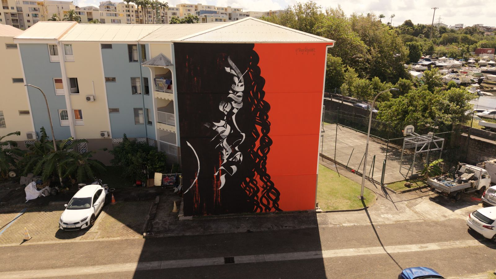

International
Box Vincent

Box Vincent · ARTMADA #2 · Drone : Noisz
Graffeur réunionnais, Box Vincent s'inscrit dans la tradition du graffiti de lettrage et de l'expression visuelle libre. Il collabore avec d'autres artistes sur des projets muraux et collectifs.
- Origine
- La Réunion
- Éditions
- ARTMADA #2 (2026)
- @boxvincent